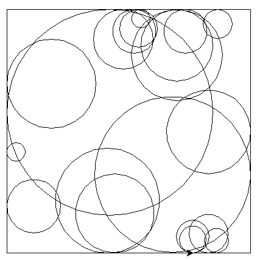
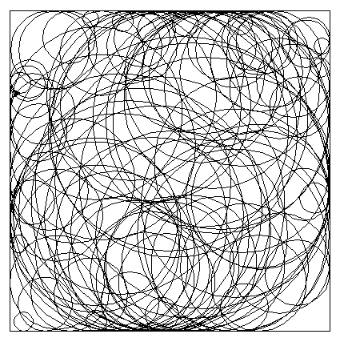

Exercices : boucle conditionnelle#
Exercice 1#
Indiquer la valeur des variables après exécution du code !
Variable
a:a = 0 while a < 5: a = a + 1
Variable
b:b = 10 while b > 5: b = b - 1
Variables
cetd:c = 5 d = 0 while c > 0: d = d + c c = c - 1
Variable
e:e = 1 while e <= 10: e = e + 2
Variable
f:f = 10 while f > 0: f = f - 3
Variable
g:g = 100 while g > 20: g = g // 2
Variables
heti:h = 1 i = 1 while h <= 9999: h = 10**i i = i + 1
Variables
jetk:j = 1 k = 0 while j < 10: if j % 2 == 1: k = k + 2 else: k = k - 1 j = j + 1
Variables
metn:m = 1 n = 1 while n < 5: m = m*1/n n = n + 2
Exercice 2#
Écrire des boucles conditionnelles pour :
Afficher dans l’ordre : 8, 7, 6, 5, 4, 3, 2, 1, 0
Afficher dans cet ordre : 1, 3, 5, 7, 9, 11
Afficher dans cet ordre : 1, 10, 100, 1000, 10000, 100000, 1000000
Afficher dans cet ordre : 1, -1, 1, -1, 1, -1, 1, -1, 1
Astuce
Pour afficher sur une même ligne les valeurs avec la fonction print, il suffit d’ajouter l’argument end = ' ' à la fonction.
Par exemple : print(i, end=' ').
Exercice 3#
Le jeu du plus ou moins consiste à deviner un nombre entier choisi au hasard par la machine entre 1 et 1000. A chaque proposition:
si on trouve le nombre, on a gagné et le jeu prend fin.
si on ne trouve pas le nombre, on reçoit l’information plus grand ou moins grand et le jeu continue.
On doit écrire un code en Pthon qui modélise ce jeu.
Importer le module nécessaire au choix aléatoire d’un nombre entier.
Créer 2 variables
netrep.nest le nombre à deviner choisi aléatoirementrepest un booléen qui vautFalse
La saisie du nombre est enregistrée dans la variable
prop.Elle se réalise avec l’instruction:
prop = int(input("proposer un nombre entre 1 et 1000: "))Écrire un code qui propose la saisie d’un nombre tant qu’on n’a pas trouvé le nombre à deviner.
Exercice 4#
Sur les figures ci-dessous, on a tracé aléatoirement des cercles dans un carré qui sont tangents aux côtés du carré.
Avec 20 cercles
{kind=link}
Avec 100 cercles
{kind=link}
Le programme doit respecter les contraintes suivantes:
le centre de chaque cercle est choisi au hasard
le rayon de chaque cercle est supérieur à 10
le carré à un côté de 400
on tracera au moins 20 cercles.
la boucle est une boucle
while
Exercice 6#
La Conjecture de syracuse appelée suite de Syracuse calcule une suite de nombres selon leur parité (pair ou impair). On utilisera une file pour stocker les valeurs de nos différentes suites de Syracuse.
Après avoir lu l’article sur wikipedia, nous allons construire différentes fonctions en Python pour calculer les nombres de cette suite.
Les nombres de la suite de Syracuse se calcule de la façon suivante:
on part d’un nombre entier
nsi
nest pair, on le divise par 2 ;nprend cette nouvelle valeursi
nest impair, on le multiplie par 3 et on ajoute 1;nprend cette nouvelle valeurTant que
nn’est pas égal à 1, on recommence.
Écrire la fonction
syracusede paramètre n, nombre entier, qui calcule et affiche les nombres de la suite de syracuse.On associe les nombres de syracuse à la trajectoire d’une feuille morte et on parle du vol de la suite. Trois valeurs symbolisent ce vol : le temps de vol, le temps de vol en altitude et l’altitude maximale.
Exemple
On calcule les termes de la suite pour N=129 et détermine les valeurs:
Le temps de vol pour N=129 est 121.
Le temps de vol en altitude pour N=129 est 2.
L’altitude maximale pour N=129 est 9232.
Écrire la fonction
temps_de_volde paramètrenqui renvoie la valeur associée au temps de vol.Écrire la fonction
vol_en_altitudede paramètrenqui renvoie la valeur associée au temps de vol en altitude.Écrire la fonction
altitude_maxde paramètrenqui renvoie la valeur associée à l’altitude maximale.